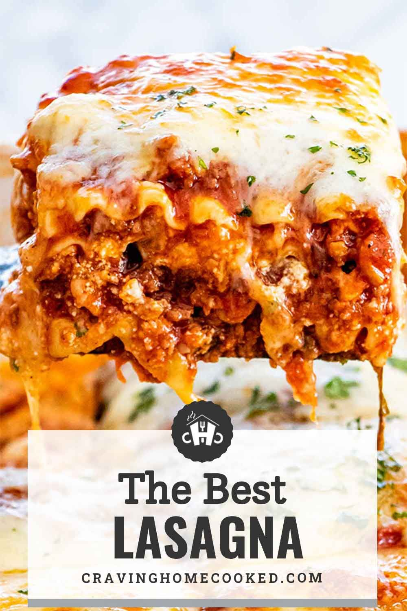

Pesto Lasagna

Scrumptious lasagna with basil pesto, spinach and plenty of bubbly cheese.
Ingredients
- 1 (16 ounce) package lasagna noodles
- 2 tablespoons olive oil
- 1 small onion, chopped
- 1 (16 ounce) package frozen chopped spinach, thawed
- 7 ounces basil pesto
Steps
- Preheat the oven to 350 degrees F (175 degrees C).
- Bring a large pot of lightly salted water to a boil. Add lasagna and cook for 8 to 10 minutes or until al dente; drain.
- In large skillet over medium heat, sauté onion in olive oil until tender. Stir in spinach; remove from heat and stir in pesto.
- In a large bowl mix ricotta cheese, egg, salt, pepper, and nutmeg.